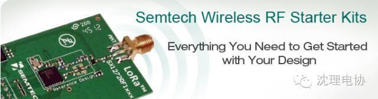
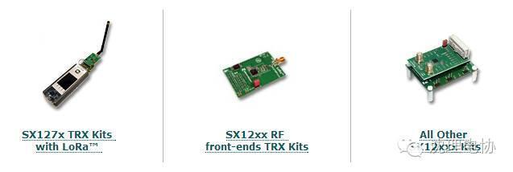
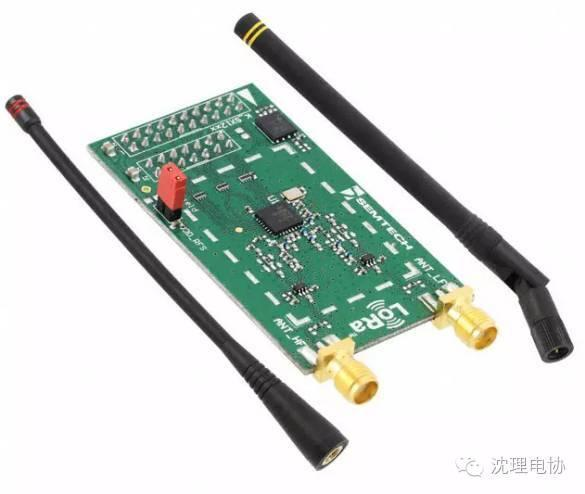
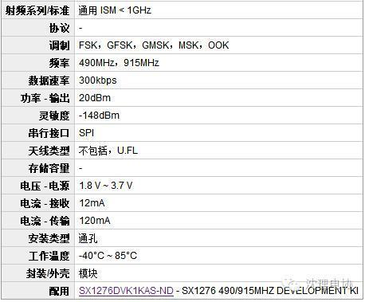
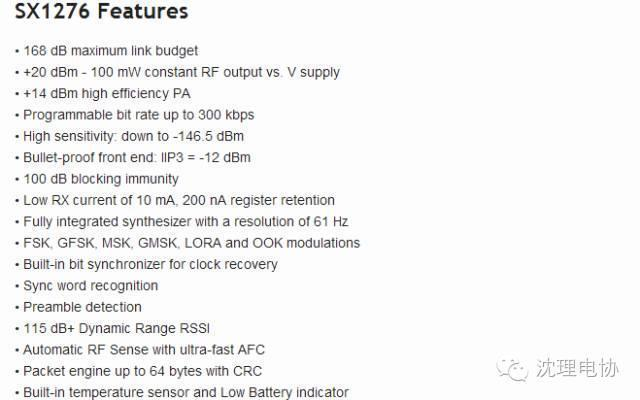
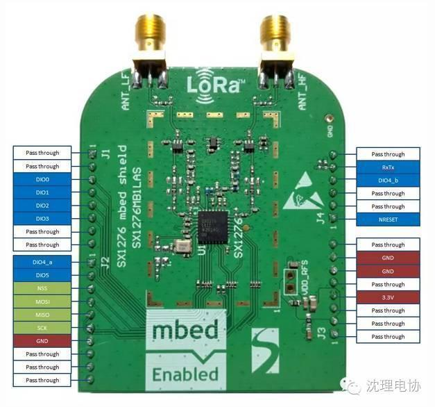
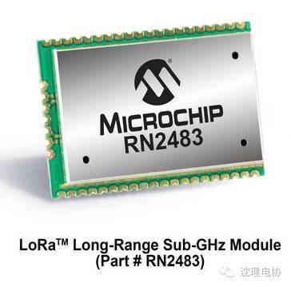
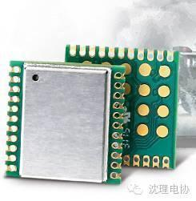

LoRa、LoRa、LoRa，重要的开发板说三遍
咳咳，说起LoRa技术，诸位都知道是超远距离传输的意思。LoRa就是Long Range的缩写。
这是一种远距离低功耗的信息传输协议，此技术由Semtech公司发布，所以它们一直在这项技术方面保持垄断。所以当然我们下文中所介绍的LoRa开发板也均来自此公司。
任何技术的发展仅靠一己之力是不够的，因此Semtech也牵头成立了LoRa联盟。
该联盟成员包括Actility、思科、Eolane、IBM、Kerlink、IMST、MultiTech、Sagemcom、ST和微芯，另外还有许多电信营运商，如Bouygues、KPN、SingTel、Proximus、Swisscom，以及FastNet。
为何大家如此关注LoRa技术呢？因为在未来物联网的时代，大家都意识到缺失了一块拼图，那就是少量信息的远距离信息传输——而LoRa正是为此而生，因此不少大公司包括IBM都纷纷押宝。
其实LoRa的开发板目前很少，Semtech目前也只发布了3款LoRa芯片：Semtech SX1272；Semtech SX1276；Semtech SX1301。抛去淘宝上的山寨开发板不说（当然山寨开发板也是很好的，此处并没有排斥之意），目前大家想玩LoRa的可以参考下面的三种玩法。

这是Semtech官方出品的开始套件，其中包含三种类型。



在前不久的STM32L0的发布会上，ST宣布与Semtech合作，宣布推出基于STM32L0的LoRa节点的参考解决方案。
大家可以看到在SX1276MB1LAS通信子板上有mbed的白色丝印。没错，这块板子可以通过mbed来开发哦。
硬件上通过STM32L0-Nucelo开发板来实现节点控制；X-Nucleo拓展板来实现模拟数据采集；SX1276MBE1LAS负责实现远距离信息传输功能。
软件工具上的支持由STM32Cube MX、ST-Link调试器、IDE（包括mbed、IAR、Keil）
LoRaWAN的协议栈由ST、Guthub、IBM和ARM mbed支持。
关于SX1276MB1LAS通信子板的介绍如下：


价格60刀+
这种使用STM32L0的LoRa节点的搭建方案是不是看的你很心动？！我们也将会在下个月的开发板评测频道中给大家呈上。请大家期待！


这是一款工业级射频无线产品。模块采用源自军用战术通信系统的LoRa调制技术设计，完美解决了小数据量在复杂环境中的超远距通信问题。模块集成了+20dBm的可调功率放大器，并可获得超过-148dBm的接收灵敏度，该方案针对应用于远距离传输且对可靠性要求极高的场合。

信息部/吴心成